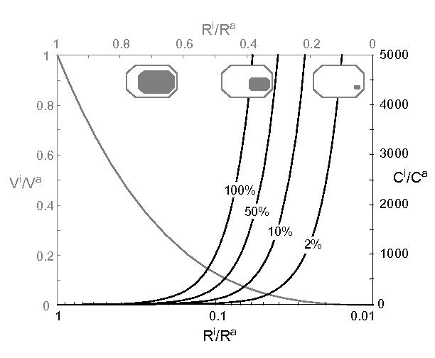
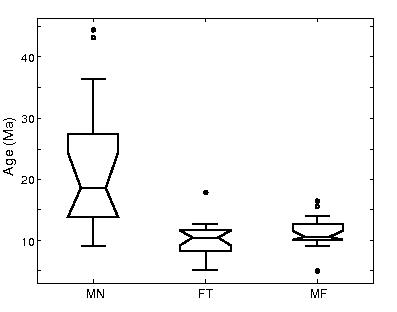

α-emitting mineral inclusions in apatite, their effect on
(U-Th)/He ages, and how to reduce it
Pieter Vermeesch1,
Diane Seward2,
Christopher Latkoczy3
Martin Wipf2, Detlef Günther3 and Heinrich Baur1
Abstract
U-Th rich mineral inclusions in apatite are often held responsible for erroneously old (U-Th)/He ages, because they produce “parentless” 4He. Three aspects associated with this problem are discussed here. Firstly, simple dimensional considerations indicate that for small mineral inclusions, the parentless helium problem might not be as serious as generally thought. For example, a mineral inclusion that is 10% the length, width and height of its host apatite needs to be a thousand times more concentrated in U and Th to produce an equal amount of He. Therefore, single isolated inclusions smaller than a few μm are unlikely to contribute significant helium. For larger or more abundant inclusions, the parentless helium problem can be solved by dissolution of the apatite and its inclusions in hot HF. Secondly, besides creating parentless helium, inclusions also complicate α-ejection corrections. Mathematical exploration of this latter problem for spherical geometries reveals that for randomly distributed inclusions, the probability distribution of single-grain ages is predicted to have a sharp mode at the mean age, with tails towards younger and older ages. On the other hand, multiple-grain measurements will yield accurate and precise age estimates if ten or more randomly distributed α-emitting mineral inclusions are present in a sample. Thirdly, thermal modeling indicates that mineral inclusions have a non-trivial but minor (<5oC) effect on the closure temperature. These predictions were tested on apatites from rapidly cooled migmatites of Naxos (Greece) which contain abundant U-rich zircon inclusions. 36 samples were subjected to two kinds of treatment. The ”pooled” age (i.e. the synthetic multi-grain age computed from a number of single-grain analyses) of 4 inclusion-free samples (13 apatites), prepared in HNO3 is 10.9 Ma, close to apatite and zircon fission-track ages from the same rock. (U-Th)/He ages of 14 inclusion-bearing samples dissolved in HNO3 range between 9 and 45 Ma, with a pooled age of 22.6 Ma. The ages of 19 HF-treated samples range between 5 and 16 Ma, with 10 of 14 single-grain samples between 9 and 13 Ma and a pooled age of 10.9 Ma. These observations agree with the theoretical predictions and support the addition of HF-treated apatite (U-Th)/He dating to the thermochronological toolbox.
The (U-Th)/He thermochronometer is based on the α-decay of 238U, 235U, 232Th and the often neglected 147Sm
in accessory minerals such as apatite, sphene and zircon. Of these minerals, apatite is by far the most used, because
of its relatively well-understood diffusive behavior and uniquely low closure temperature (~70oC; Wolf et al., 1996).
The radioactive parent (U and Th) and radiogenic daughter (4He) are measured separately on different
types of mass spectrometer, and accurate ages are only possible if all parent and daughter nuclides are
accounted for. Fitzgerald et al. (2006) provide an excellent discussion of factors that might violate this
requirement, such as α-ejection, mineral and fluid inclusions or He implantation by a U-Th rich matrix.
The present paper focuses on arguably the most important complication, which is associated with
mineral inclusions rich in U and/or Th. The most common α-emitting mineral inclusions in apatite are
monazite and zircon (Farley and Stockli, 2002). Zircon contains up to 5000 ppm U and Th, while
Th-concentrations of monazite can be up to 30% (Deer et al, 1992). These inclusions eject He into the surrounding
apatite that is measured following degassing by heating with a laser or in a resistance furnace. However,
zircon inclusions in particular will not dissolve in the concentrated HNO3 commonly used to digest
apatites prior to U-Th analysis. Hence, a substantial fraction of the measured He may be “parentless”.
In the following sections, we will first assess the severity of this problem through some simple order-of-magnitude
considerations. As a solution to the “parentless He problem”, we propose the dissolution of apatite and inclusions in
more aggressive acids, such as hot HF (Carter et al., 2004). However, this does not solve a second complication
associated with α-emitting mineral inclusions, namely the way they complicate the α-ejection correction. Typically,
α-ejection corrections are made under the assumption of uniform U-Th concentration, but this assumption is clearly
violated in the presence of U-Th rich mineral inclusions. A mathematical study of this effect is given in Section 3.
Besides complicating the α-ejection correction, inhomogeneous U-Th distributions also have an effect on the
diffusive behavior (closure temperature) of the radiogenic helium. Section 4 will illustrate that this is a relatively
minor effect. Therefore, the HF-dissolution technique might also be applicable to slowly cooled rocks (e.g., 1
oC/Ma). However, several studies have reported unresolved problems with slowly cooled rocks, including
large data scatter (Fitzgerald, 2006) and (U-Th)/He ages older than fission track ages (Soderlund et
al, 2005; Green and Duddy, 2006). To avoid these problems, Section 5 illustrates the effectiveness of
the HF-dissolution technique on inclusion-rich apatites from rapidly cooled rocks of Naxos (Greece).
2 PARENTLESS HELIUM AND THE IMPORTANCE OF BEING INCLUSION-FREE
“Erroneous” apatite (U-Th)/He ages have often been attributed to U-Th rich mineral inclusions (e.g., Lippolt et al.,
1994; House et al., 1997; Fitzgerald et al., 2006). A very substantial part of many (U-Th)/He studies is spent on
selecting inclusion-free apatites under the binocular microscope. Under reflected and transmitted light, with or
without polarizers, grains are scrutinized for imperfections and mineral inclusions, in order to avoid the parentless
helium problem. But even when no inclusions can be detected with this method, it has been suggested that
sub-micron sized inclusions, only visible by electron microscopy or fission-track mapping for uranium inhomogeneity,
might produce significant amounts of parentless He (Farley and Stockli, 2002; Ehlers and Farley, 2003).
The validity of these concerns can be assessed by some simple order-of-magnitude calculations. Consider a spherical apatite of radius Ra containing a spherical mineral inclusion with radius Ri. If the inclusion is 10 times smaller than the apatite (Ri = Ra/10), then its cross-sectional area is 100 times smaller (Ai=Aa/100) and the volume of the inclusion is 1000 times smaller than that of the host apatite (Vi=Va/1000). In other words, an apatite containing (an exceptionally low) 1 ppm U requires such an inclusion to be 1000 times more concentrated in U (i.e. 1000 ppm) for it to produce an equal amount of He (Figure 1). Identical arguments hold for non-spherical geometries. For example, consider a prismatic apatite with 10 ppm of U, containing an inclusion that is 1% of its length, 1% of its width and 1% of its height. Such an inclusion has one millionth the volume of the host grain (Figure 1). It would need to consist of pure uranium to increase the helium by just 10%. Typical apatites used in thermochronology have dimensions on the order of 100 μm, and U-Th concentrations ~10 ppm (Farley, 2002). Zircon inclusions have U and Th concentrations of typically 100-1000 ppm and sometimes up to 5000 ppm, whereas monazite can contain up to 30% of Th (Deer et al., 1992). Therefore, sub-micron sized inclusions may be a less significant source of parentless helium than previously thought, unless they are extremely numerous and their composite volume is more than a ten-thousandth or so of the host apatite. We will now shift our attention away from micro-inclusions and focus on somewhat larger inclusions which do contribute substantial amounts of parentless helium.

In the previous section, we discussed the magnitude of the parentless helium problem for small mineral
inclusions. As will be demonstrated later, it is possible to avoid this problem altogether (even for relatively large
inclusions) by dissolving the apatites and their mineral inclusions in aggressive acids such as HF. However, this does
not solve a second problem, caused by the inhomogeneous U-Th concentrations associated with mineral inclusions.
α-decay of U, Th and their radioactive daughters is associated with energies of 4-8 MeV (Farley et al., 1996).
α-particles with such high energies travel on average 20 μm in apatite before coming to rest. Consider a spherical
apatite with radius R and an α-emitting nuclide located at a radial distance X from its center. Let S be the
α-stopping distance (e.g., 20 μm). α-emitting nuclides located at a distance R-S≤X≤R have a non-zero
probability of ejecting an α-particle outside the boundaries of the apatite grain (Figure 2). For any given
spatial distribution of U and Th, it is possible to predict the fraction (1-Ft) of radiogenic He lost by
α-ejection (Farley et al., 1996; Meesters and Dunai, 2002; Hourigan et al. 2005). In most cases, the U-Th
distribution is not known and assumed to be uniform. This assumption often constitutes the bulk of the
analytical (U-Th)/He age uncertainty. If significant He is produced by small mineral inclusions, the
assumption of uniform composition is violated. We will address this problem mathematically for spherical
grain geometries. The physical dimension of the mineral inclusions will be neglected, i.e. they will be
considered point sources of α-particles, making the He-retentivity of the inclusion itself irrelevant.
If Fta is the α-retention fraction of the apatite, and Fti is the fraction of α-particles that are ejected from the inclusion but remain inside the apatite, then the total α-retention factor Ft can be defined as:
|
| (1) |
where G is the fraction of α-decay activity (π) associated with the mineral inclusion:
|
| (2) |
|
| (3) |
with nλ the decay constant and [n] the number of atoms or moles of nuclide n (for n = 238, 235, 232 or 147). Note that equation 3 considers He-production to be a linear function of time, which is a good approximation for relatively young samples (t ≪ 1/nλ ∀ n). Our goal is to derive the probability distribution of Ft. To achieve this goal, we first compute the cumulative distribution function (cdf) of the α-retention factor Fti:
|
| (4) |
|
| (5) |
Where X* is the nondimensional radial distance X*=X/R corresponding to the α-retention factor Fti. cdfFti can be computed because there exists a unique mapping between Fti and X* (Figure 2), derived from equation 1 of Farley et al. (1996):
|
| (6) |
 | (7) |
The probability density functions (pdfs) are then easily obtained by taking derivatives of the cdfs:
|
| (8) |
|
| (9) |
Using equations 8 and 9, we can calculate , the expected value of Fti assuming that the inclusions have a spatially uniform distribution. Here we use “expected value” in the statistical sense of the word, meaning the average Fti of many apatites containing a few inclusions, or the average Fti of a few apatites containing many inclusions. Thanks to the mapping between Fti and X* (equations 6 and 7 and Figure 2), can be calculated either by integrating over Fti or over X*. Not surprisingly, both approaches yield the same result, which turns out to be the analytical solution for Fta under spherical geometry calculated by Farley et al. (1996) for compositionally homogeneous apatite:
|
| (10) |
The probability distribution of Ft (equation 1) can be calculated for any G from the probability distribution for Fti (equation 8) and the expression for Fta given by Farley et al. (1996) and equation 10 (Figure 3). Although G is not known in most cases, our ignorance about G can be quantified by assigning a probability density function pdfG to it. Again, to derive the probability distribution of Ft, we must first define its cumulative density function cdfFt:
|
| (11) |
with cdfFti(⋅) as defined in equation 4, after which pdfFt is obtained by taking the derivative:
|
| (12) |
Figure 4 shows pdfFt for a uniform pdfG distribution and various S/R-values. The mode of the distribution is
always at Fta, with heavy tails, especially toward high α-retentivities. If a “normal” α-ejection correction is made
(Ft ≡ Fta) the most frequently measured age will be accurate, but some other measurements will not.
“Undercorrected” ages will generally be further removed from the true age than “overcorrected” ages. It
would be relatively easy to compute Ft- and corresponding age-distributions for different, and possibly
more realistic pdfGs such as the logistic normal distribution. However, such an exercise is of limited
interest because in reality, pdfG is not known. Nevertheless, the main features of Figures 3 and 4 are
robust: the mean value of Fti equals Fta and therefore the mean value of Ft is independent of pdfG.
The distribution of Ft has a sharp mode at Fta, with tails towards lower and higher values (Figure
4).
Given the probability distribution of Ft (equation 12), the standard deviation of Ft can be calculated as:
|
| (13) |
Where = Fta (equations 1 and 10). The relative spread (σ(Ft)/Ft) of the single grain α-retention factor Ft depends on the grain size (Figure 5). For very small grains (S/R > 2), the spread is zero because all 4He is ejected (Ft = 0), irrespective of the presence or absence of mineral inclusions. For very large grains (S/R ≈ 0), the spread of Ft is also zero, because all 4He stays within the apatite (Ft ≈ 1) and the chance that a mineral inclusion is located within the outermost fraction S/R of such an apatite is negligible. However, between these two extremes, the spread of the α-retention factors is non-zero, reaching a maximum at S/R ≈ 0.6, where σ(Ft)/Ft ≈ 0.2. Please note that because the Ft-distribution is not normally distributed (Figure 5), the 2σ-value of 40% must not be interpreted as the usual 95% confidence interval. However, by virtue of the Central Limit Theorem, the average of n single-grain measurements converges to a normal distribution with standard deviation σ(Ft)/. For example, the expected 2σ-spread (corresponding to a 95% confidence interval) of Ft-values for multi-grain packages containing n=10 grains each with one inclusion, or single grains with n = 10 inclusions is less than 12%. If S/R = 1/3 (e.g., S = 20 μm and R = 60 μm), then the 2σ confidence interval for Ft is ~ 10% (Figure 5). These estimates are conservative because they assume that all the U and Th is contained in the mineral inclusions and that the host apatite itself contains no U or Th. If this is not the case, then the spread of the multi-grain ages will be smaller.
 ).
).
4 THE EFFECT OF α-EMITTING MINERAL INCLUSIONS ON CLOSURE TEMPERATURES
Besides complicating the α-ejection correction, the inhomogeneous U-Th-distribution inherent to inclusion-bearing
apatites also affects the diffusive behavior of the helium. This problem is well studied in the case of concentrically
zoned spherical crystals (Meesters and Dunai, 2002b). The “closure temperature” (defined below) of the (U-Th)/He
system depends on the spatial distribution of the helium. This does not constitute a significant problem for
relatively rapidly cooled rocks (e.g. > 10 oC/Ma for rocks older than ~10 Ma). However, for slowly cooled rocks,
the effect of mineral inclusions on helium diffusion might induce significant scatter in the apparent
ages, depending on the spatial distribution of the inclusions and their relative α-emitting activity
(G-factor, equation 2), which are nearly impossible to measure. To get a handle on the significance of this
effect, this section will consider the “worst case scenario” of a spherical U-Th-free apatite containing an
α-emitting micro-inclusion at its core or rim. Such a grain should have the most different diffusive behavior
compared to the default case of an inclusion-free apatite containing a homogeneous U-Th-distribution.
Before proceeding with the analysis, it is useful to recall the definition of “closure temperature” by Dodson
(1973). First consider the case of isothermal diffusion for a simple geochronometer defined by one radioactive parent
P (e.g., 40K) decaying to a radiogenic daughter D (e.g., 40Ar). At high temperatures, the radiogenic daughter
escapes from mineral grains as soon as it is formed whereas at low temperatures, thermally activated diffusion is
negligible and the daughter products are quantitatively retained. Now consider the case of monotonic cooling. In the
high-temperature part of the cooling-curve, the D/P-ratio stays zero. Under transitional temperatures, the
D/P-ratio increases at a rate that increases with time. Finally, at low temperatures, D/P increases
linearly with time. The apparent age is the time intercept of the linear section of the D/P vs time
curve. This age corresponds to a particular temperature in the cooling history, the so-called “closure
temperature” Tc. If the cooling curve is linear in the temperature T, then the closure temperature (Tc)
is the temperature intercept of the linear section of the T vs D/P curve (Figure 6). If the cooling
curve is linear in 1/T, then Tc can be calculated analytically (Dodson, 1973). Things are a little more
complicated for (U-Th)/He because there are not one but three radioactive parents (238U, 235U, and 232Th)
with different half-lives, causing their relative contributions to change with time. However, the helium
content of young rocks does increase linearly with time to a very good approximation (t ≈ [He]/π
with π as defined in equation 3). Therefore, the closure temperature concept can also be used for
(U-Th)/He. Because we are interested in the relationship between mineral inclusions and cooling rate
(dT/dt), we will assume linear cooling (dT/dt = constant with t). We will not calculate Tc using
Dodson’s approximate analytical solution (an exact solution is only possible if T ∝ 1/t). Instead, we
will calculate Tc numerically using the DECOMP program of Bikker, Meesters and Dunai (Dunai,
2005).
As said before, in the case of linear cooling Tc is the temperature-intercept of a curve plotting temperature
versus apparent (U-Th)/He age (Figure 6). Thanks to a combination of the “superposition principle” (Meesters and
Dunai, 2002a & b) and the spherical symmetry, a concentrated α-emitting inclusion is mathematically equivalent to
a thin spherical shell at the same distance of the rim (A.G.C.A. Meesters, written communication,
July 2006). A spherical shell of a certain U-Th concentration produces as much He as a half-shell
with twice, or a quarter-shell with four times this U-Th concentration. By induction it follows that a
U-Th rich spherical shell is equivalent to a point source of equal α-emitting activity located at the
same distance from the rim. Therefore, individual inclusions can be adequately modeled as spherical
shells in DECOMP. The “worst case scenario” of a single α-emitting micro-inclusion located in the
center of a U-Th-free apatite was modeled in DECOMP by a spherical zone of 1 μm radius containing
all the U and Th, contained in a much larger spherical host apatite (e.g., R = 60 μm in Figure 6),
whereas an inclusion located on the rim of such an apatite was modeled by a spherical shell of 1 μm
thickness. Given a user-defined cooling curve (10 oC/Ma for Figure 6), DECOMP forward-models the
apparent age through time using an eigenmode-decomposition method (Meesters and Dunai, 2002a & b).
In this paper, we used 100 eigenmodes. The apparent age increases linearly with time in the lower
temperature part of the linear cooling model (Figure 6). As expected, the linear section of the T-t curve
begins at higher temperatures for the apatite containing an inclusion at its core than for inclusion-free
apatite. Intuitively, this makes sense because the helium produced by the inclusion must “travel further”
before reaching the edge of the apatite. The opposite is true for apatites with an inclusion on their rim.
The closure temperature calculation was repeated for different grain-sizes (40 μm ≤ R ≤ 130 μm) and cooling rates (10 oC/Ma and 1 oC/Ma) (Figure 7). In the “worst case scenario” of an inclusion-bearing apatite, Tc is 5-10 oC higher or lower than in the absence of inclusions. This is a small effect in several respects. First of all, the “worst case scenario” used for the calculations of Figure 7 is very unlikely to ever occur in nature. As explained in Section 2, mineral inclusions never contain 100% of α-emitting activity, because their relative volume is small and the U-Th content of apatite is never zero. Consider the more realistic scenario of a mineral inclusion contributing 50% of the total helium (G = 0.5). Because of the superposition principle, such an inclusion will change the closure temperature by only 2.5-5 oC. The effects of grain size (15-20 oC difference in Tc between 40 and 130 μm, Figure 7) and cooling rate (~ 15 oC difference in Tc between 1 and 10 K/Ma, Figure 7) are greater than the inclusion-effect. Therefore, it should also be possible to apply the HF-dissolution method to slowly cooled rocks. However, several studies have reported irreproducible apatite (U-Th)/He ages for slowly cooled terranes (Fitzgerald et al., 2006) and (U-Th)/He ages older than apatite fission track ages (Soderlund et al., 2005; Green and Duddy, 2006). Therefore, the next section will test the HF-dissolution method on rapidly cooled rocks.
5 APPLICATION TO INCLUSION-RICH APATITES FROM NAXOS, GREECE
From the archive of apatite fission-track samples at ETH-Zürich, we chose a sample that was both rapidly cooled
and full of large mineral inclusions. The sample, NAX-3, comes from the migmatite core on the eastern side of
Naxos. In fact, apatites from NAX-3 contain so many inclusions that it was quite challenging to date them using the
fission-track method. Due to the U bearing inclusions which form “stars” on the mica solid state track recorders
(Figure 8), clear grains had to be chosen with care. Nevertheless, a fission-track age of 9.5 ± 1.8 (2σ) was measured
using the ζ (zeta) calibration method (Hurford and Green, 1983) (Figure 9.a). The U-concentration of the
apatites was determined to be ~20 ppm. Two additional zircon fission-track ages were recorded by Zingg
(2004) from the same migmatite at 9.7 ± 1.0 and 10.6 ± 2.0 Ma (2σ) confirming the rapid cooling.
a. b.
a. b. 
Inspection under a binocular microscope (200× magnification) revealed that most inclusions are zircon, based on crystal shape and reflectance (Figure 10). Zircons are the “right” kind of inclusion for the present study, because they are particularly hard to dissolve. After measuring their size under the microscope for the calculation of Fta, the apatites were packed in Pt foil tubes. Two batches of grains were prepared: 26 single grain packets and 7 multi-grain packets with inclusion-bearing apatites (labels beginning with “M” in Table 1) and four multi-grain packets with inclusion-free apatites (labels beginning with “Z” in Table 1).
a. b. c.
Helium contained in the apatites was extracted during 3 minutes of laser heating under ultra-high vacuum (10-8
Torr), using a 1064 nm wavelength Nd-YAG laser. Re-extraction experiments yielded no detectable helium,
indicating complete degassing. Following its release from the samples, the gas was cleaned in a liquid N2 cooled
activated charcoal cold finger and Ti/Zr and Al/Zr getters. 4He was measured by peak height calibration to a bottle
of known amounts of 4He in a custom-built sector-type mass spectrometer. After He-analysis, the Pt packets were
recovered from the laser pan, partially opened under the binocular microscope, and dropped into teflon
bombs. Because Pt dissolves in HF and forms PtAr interferences in the ICP-MS plasma (Reiners,
2005), we had to recover the Pt packets before HF treatment. Using Nb foil envelopes would have
been an alternative solution (Reiners, 2005). In nearly half of the cases, dropping the samples into
the teflon bombs caused the apatite(s) to fall out of their partially opened packet. These grains were
specifically selected for later HF-treatment in order to avoid complications of PtAr interferences. First
however, all samples were spiked with ~50 fmol of 233U and ~20 fmol of 229Th. ~1 ml of concentrated
and high purity quartz-distilled HNO3 was added to all the samples. After digestion on a hot plate
(~150oC) for one day, the HNO3 was dried down for the inclusion-free and half of the inclusion-bearing
samples, and ~1 ml of 6%HNO3-0.8%HF solution was added. For these samples (labels beginning with
“MN” and “ZN” in Table 1), this was the final sample preparation step before the U-Th measurement.
For the remaining 19 inclusion-bearing samples (labels beginning with “MF” in Table 1), the empty
Pt-packets were recovered from the teflon vials prior to evaporation of the concentrated HNO3. After
dry-down, ~1 ml of concentrated, high purity Teflon-distilled HF was added and the samples were bombed
in an oven at 200oC for 24 hours and on a hot plate at ~240oC for an additional 48 hours. ~ 100
μl of concentrated HNO3 was added to the HF for samples MF16-19, following a suggestion of P.
Reiners (written communication, May 2006). The HF was dried down and the samples re-bombed
in ~1 ml concentrated HCl at ~200oC for 24 hours to dissolve fluoride salts that may have formed
during HF evaporation. After a final dry-down, ~1 ml 6%HNO3-0.8%HF solution was added and
the samples were ready for ICP-MS analysis. This combined HNO3-HF-HCl treatment is tailored to
dissolve larger crystals for zircon (U-Th)/He dating (Reiners, 2005). However, zircons inclusions in
apatite are generally much smaller, and a less aggressive (e.g., shorter, less hot) procedure might also be
suitable.
229Th, 232Th, 233U, 238U (and 235U) were measured in low mass resolution on a single-collector ICP-SF-MS (Element2, Thermo Electron Corporation, Bremen, Germany). The results are summarized in Table 1. Immediate inspection of the data reveals that the spread of the zircon inclusion-bearing grain ages is much larger for the HNO3 treated grains than for those treated with HF (Figure 9.b). The former are up to 45 Ma old, whereas the latter cluster more tightly and are closer to the fission-track age. Using the grain dimensions that were measured for the α-ejection correction as an estimate of mass yields median U and Th concentrations of ~5 and ~10ppm for the HNO3-treated grains, whereas the U and Th concentrations of the HF-treated grains was ~6 and ~14ppm respectively, closer to the fission track estimate (~19ppm). 10 of the 14 HF-treated single grain samples are between 9 and 13 Ma, consistent with the sharp mode of Figure 4. As discussed in the previous section, the average age of multiple inclusion-bearing apatites should be an accurate estimate of the true age. To compare and combine the single grain measurements with the multi-grain measurements, we introduce a “pooled (U-Th)/He age”, which effectively is a weighted mean age obtained by adding the U and Th of several individual analyses, as well as their He-content (weighted for α-ejection), and calculating a synthetic multi-grain age. The pooled age of the HNO3-treated inclusion-bearing grains is 22.6 Ma, whereas the HF-treated pooled age is 10.9 Ma, which is identical to the pooled (U-Th)/He age of the four inclusion-free apatite analyses. Note that the (U-Th)/He age of one of these four inclusion-free ages is nearly twice as old as the other three. Because we have no indication as to what is the cause of this, we chose not to reject the measurement. However, if the measurement is removed as being unrepresentative the resulting age is 9.2 Ma. Fitzgerald et al. (2006) also observed single grain ages that were several times older than “normal”. Perhaps one of the factors discussed by these authors is responsible for this, or a yet unknown complication is at work. As discussed in Section 3 and shown in Figure 5, the spread of HF-treated multi-grain samples should be less than that of the single grain ages. The relative 2σ-spread of multi-grain packages each containing ten inclusion-bearing grains of 100 μm width (equivalent to S/R ~ 0.2) should be less than ~ 8 % (Figure 5). This is confirmed by the five multi-grain measurements of Table 1 (MF15-19), which have a 2σ-spread of just 5%.
| sample | # grains | Th | 2σ | U | 2σ | He | 2σ | Fta | age | 2σ |
| [fmol] | [fmol] | [fmol] | [Ma] | |||||||
| MN1 | 1 | 104 | 4 | 81 | 2 | 3.96 | 0.14 | 0.66 | 44.5 | 9.3 |
| MN2 | 1 | 550 | 19 | 2041 | 50 | 22.87 | 0.35 | 0.85 | 9.6 | 0.7 |
| MN3 | 1 | 201 | 7 | 493 | 12 | 11.07 | 0.21 | 0.79 | 20.1 | 2.2 |
| MN4 | 1 | 173 | 6 | 283 | 7 | 3.89 | 0.15 | 0.75 | 12.5 | 1.8 |
| MN5 | 1 | 119 | 3 | 117 | 3 | 5.51 | 0.15 | 0.68 | 43.2 | 8.1 |
| MN6 | 1 | 172 | 7 | 428 | 14 | 8.74 | 0.17 | 0.75 | 19.5 | 2.7 |
| MN7 | 1 | 185 | 7 | 371 | 7 | 5.90 | 0.16 | 0.74 | 15.1 | 2.2 |
| MN8 | 1 | 160 | 8 | 89 | 3 | 0.84 | 0.12 | 0.58 | 9.0 | 2.9 |
| MN9 | 1 | 249 | 7 | 588 | 11 | 11.51 | 0.22 | 0.78 | 17.8 | 2.0 |
| MN10 | 1 | 365 | 11 | 725 | 19 | 11.56 | 0.22 | 0.81 | 13.7 | 1.3 |
| MN11 | 1 | 144 | 5 | 113 | 2 | 1.93 | 0.13 | 0.64 | 16.1 | 3.8 |
| MN12 | 1 | 90 | 18 | 285 | 58 | 6.17 | 0.08 | 0.84 | 20.6 | 4.6 |
| MN13 | 8 | 660 | 23 | 2358 | 73 | 93.39 | 1.38 | 0.79 | 36.5 | 4.0 |
| MN14 | 10 | 2169 | 451 | 2710 | 554 | 91.60 | 0.28 | 0.85 | 27.5 | 5.3 |
| MN (pooled) | 30 | 5342 | 452 | 10682 | 565 | 345.32 | 1.55 | 22.6 | 1.1 | |
| MF1 | 1 | 451 | 14 | 588 | 14 | 9.57 | 0.17 | 0.77 | 14.0 | 1.8 |
| MF2 | 1 | 628 | 22 | 874 | 15 | 9.75 | 0.18 | 0.74 | 10.1 | 1.5 |
| MF3 | 1 | 768 | 25 | 185 | 4 | 1.74 | 0.13 | 0.76 | 5.0 | 0.7 |
| MF4 | 1 | 156 | 5 | 294 | 7 | 4.27 | 0.14 | 0.78 | 12.9 | 1.5 |
| MF5 | 1 | 260 | 9 | 596 | 15 | 6.97 | 0.21 | 0.80 | 10.4 | 1.1 |
| MF6 | 1 | 370 | 14 | 645 | 17 | 6.91 | 0.18 | 0.73 | 10.1 | 1.5 |
| MF7 | 1 | 374 | 10 | 867 | 18 | 10.64 | 0.22 | 0.85 | 10.2 | 0.7 |
| MF8 | 1 | 163 | 6 | 222 | 5 | 2.02 | 0.13 | 0.65 | 9.3 | 2.1 |
| MF9 | 1 | 136 | 4 | 226 | 5 | 2.36 | 0.13 | 0.79 | 9.1 | 1.1 |
| MF10 | 1 | 130 | 4 | 131 | 4 | 2.00 | 0.13 | 0.59 | 16.4 | 4.7 |
| MF11 | 1 | 204 | 9 | 357 | 14 | 6.42 | 0.16 | 0.79 | 15.6 | 1.8 |
| MF12 | 1 | 126 | 5 | 107 | 3 | 1.01 | 0.12 | 0.63 | 9.2 | 2.4 |
| MF13 | 1 | 126 | 26 | 688 | 142 | 9.01 | 0.10 | 0.81 | 12.1 | 2.6 |
| MF14 | 1 | 278 | 58 | 1013 | 212 | 11.75 | 0.10 | 0.86 | 10.6 | 2.3 |
| MF15 | 10 | 27525 | 2179 | 5140 | 234 | 121.41 | 1.82 | 0.74 | 11.1 | 1.6 |
| MF16 | 10 | 2557 | 523 | 7454 | 1525 | 84.64 | 0.22 | 0.85 | 10.1 | 2.1 |
| MF17 | 10 | 1986 | 406 | 5610 | 1146 | 76.81 | 0.21 | 0.85 | 12.4 | 2.6 |
| MF18 | 10 | 1327 | 274 | 3892 | 806 | 54.45 | 0.30 | 0.83 | 13.3 | 3.0 |
| MF19 | 11 | 919 | 190 | 2578 | 533 | 28.01 | 0.17 | 0.79 | 10.6 | 2.5 |
| MF (pooled) | 64 | 38487 | 2303 | 31467 | 2166 | 563.09 | 1.96 | 10.9 | 0.6 | |
| ZN1 | 5 | 151 | 7 | 182 | 8 | 4.20 | 0.14 | 0.70 | 21.5 | 3.9 |
| ZN2 | 3 | 164 | 6 | 262 | 8 | 2.20 | 0.12 | 0.69 | 8.2 | 1.5 |
| ZN3 | 1 | 175 | 5 | 515 | 13 | 4.93 | 0.14 | 0.81 | 8.5 | 0.8 |
| ZN4 | 4 | 175 | 6 | 454 | 11 | 4.61 | 0.15 | 0.68 | 10.7 | 2.0 |
| ZN (pooled) | 13 | 666 | 12 | 1414 | 21 | 21.99 | 0.28 | 10.9 | 0.2 | |
Simple dimensional considerations indicate that single uranium-rich inclusions less than a few percent of the
length, width and height of the host apatite are unlikely to contribute substantial radiogenic helium. For larger
inclusions or multiple small inclusions, the parentless helium problem can be partially solved by more
aggressive acid dissolution procedures. Under the assumption of uniformly distributed mineral inclusions,
the average (U-Th)/He age of many inclusion-rich apatites that have undergone such a treatment is
accurate. Please note that the assumption of a random distribution can more easily be verified in
the presence of large inclusions (e.g., Figure 10) than for micro-inclusions or a compositionally zoned
apatite. Grain-selection is significantly faster and easier without the restriction to inclusion-free grains.
For some samples, it is nearly impossible to find inclusion-free grains. Further, by broadening the
search to include inclusion-bearing grains, it is much easier to find large, euhedral apatites, requiring
relatively small α-ejection corrections. Additionally, the presence of U-Th rich inclusions may be an
advantage for dating young rapidly cooled rocks. Multi-grain measurements of inclusion-bearing apatites
combine the best of two worlds. They have the high U, Th and He content of zircon, but the diffusive
behavior and uniquely low closure temperature of apatite. This is similar to the idea behind the work of
Min et al. (2006), who dated volcanic olivine and pyroxene using the He produced by the α-emitting
inclusions contained within them. On the other hand, dissolving U-Th rich inclusions also causes some
complications, particularly for single-grain dating. The probability distribution of single grain ages has heavy
tails.
The revised methodology has applications to all rock-types which have inclusion-bearing apatites. However, in
most studies, only a few grains are usually dated and it is often possible to find two or three suitable clear crystals.
For detrital source studies however, this is not the case because in such studies many more grains
are necessary to characterize the population. The difficulty of finding enough inclusion-free grains
that represent a realistic and representative cross section of the populations can only be made by also
including some of the inclusion-bearing apatites. Although the precision of single grain (U-Th)/He ages on
inclusion-bearing apatites is worse than the precision of inclusion-free apatite (U-Th)/He ages, it is
comparable to or better than the precision of detrital apatite fission track ages. Thus we recommend that
for detrital studies using apatite analysis the more aggressive dissolution method is used routinely.
Acknowledgments This manuscript benefited from input from Rainer Wieler and comments from Peter Reiners and two anonymous reviewers. Pieter Vermeesch is financially supported by a Marie Curie Fellowship of the European Union (CRONUS-EU network).
References
- Carter, T. J., Kohn, B. P., Foster, D. A., and Gleadow, J. W. (2004) How the Harcuvar Mountains metamorphic core complex became cool: Evidence from apatite (U-Th)/He thermochronometry. Geology (32) 985-988.
- Deer, W.A., Howie, R.A., and Zussman, J. (1992) An Introduction to the Rock-Forming Minerals, 2nd edition. Longman Scientific and Technical Press, 696 pp.
- Dodson, M.H. (1973) Closure temperature in cooling geochronological and petrological systems. Contrib. Mineral. Petrol., (40) 259-274.
- Dunai, T. J. (2005), Forward modeling and the interpretation of (U-Th)/He ages. Reviews in Mineralogy and Geochemistry, Vol. 58 (ed. P. W. Reiners and T. A. Ehlers), pp. 259-247.
- Ehlers T. A. and Farley K. A. (2003) Apatite (U-Th)/He Thermochronometry: methods and applications to problems in tectonics and surface processes. Earth and Planetary Science Letters 206(1-14).
- Farley K. A., Wolf R. A., and Silver L. T. (1996) The effects of long alpha-stopping distances on (U-Th)/He ages. Geochimica et Cosmochimica Acta 60(21), 4223-4229.
- Farley K. A. and Stockli D. (2002) (U-Th)/He Dating of Phosphates: Apatite, Monazite, and Xenotime. In Phosphates, Reviews in Mineralogy and Geochemistry, Vol. 15 (ed. M. Kohn, J. Rakovan, and J. M. Hughes), pp. 559-578.
- Farley, K.A. (2002) (U-Th)/He dating: Techniques, calibrations, and applications. In Noble Gases in Geochemistry and Cosmochemistry, Reviews in Mineralogy and Geochemistry, Vol. 47 (ed. Porcelli, D.P., Ballentine, C.J., and Wieler, R.), pp. 819-844.
- Fitzgerald P. G., Baldwin S. L., Webb L. E., and O’Sullivan P. B. (2006) Interpretation of (U-Th)/He single grain ages from slowly cooled crustal terranes: A case study from the Transantarctic Mountains of southern Victoria Land. Chemical Geology 225, 91-120.
- Galbraith R. F. (1990) The radial plot; graphical assessment of spread in ages. Nuclear Tracks and Radiation Measurements 17, 207-214.
- Green, P. F. and Duddy, I. R. (2006) Interpretation of apatite (U-Th)/He ages and fission track ages from cratons, Earth. Planet. Sci. Lett. (244)541-547.
- Hourigan J. K., Reiners P. W., and Brandon M. T. (2005) U-Th zonation dependent alpha-ejection correction in (U-Th)/He chronometry. Geochimica et Cosmochimica Acta 69, 3349-3365.
- House M. A., Wernicke B. P., Farley K. A., and Dumitru T. A. (1997) Cenozoic thermal evolution of the central Sierra Nevada, California, from (U-Th)/He thermochronometry. Earth and Planetary Science Letters 151(3-4), 167-179.
- Hurford A. J. and Green P. F. (1983) The zeta age calibration of fission track dating. Isotope Geoscience 1, 285-317.
- Lippolt H. J., Leitz M., Wernicke R. S., and Hagedorn B. (1994) (Uranium+thorium)/helium dating of apatite: experience with samples from different geochemical environments. Chemical Geology 112, 179-191.
- McGill R., Tukey J. W., and Larsen W. A. (1978) Variations of Boxplots. The American Statistician 32, 12-16.
- Min, K., Reiners, P. W., Wolff, J. A., Mundil, R. and Winters, R. L. (2005) (U-Th)/He dating of volcanic phenocrysts with high-U-Th inclusions, Jemez Volcanic Field, New Mexico. Chemical Geology (227)223-235.
- Meesters A. G. C. A. and Dunai T. J. (2002a) Solving the production-diffusion equation for finite diffusion domains of various shapes Part I. Implications for low-temperature (U-Th)/He thermochronology. Chemical Geology (186)333-344.
- Meesters A. G. C. A. and Dunai T. J. (2002b) Solving the production-diffusion equation for finite diffusion domains of various shapes Part II. Application to cases with α-ejection and nonhomogeneous distribution of the source. Chemical Geology (186)347-363.
- Reiners P. W. (2005) Zircon (U-Th)/He Thermochronometry. In Thermochronology, Reviews in Mineralogy and Geochemistry, Vol. 58 (ed. P. W. Reiners and T. A. Ehlers), pp. 151-176.
- Soderlund, P., Juez-Larre, J., Page, L.M., Dunai, T.J. (2005) Extending the time range of (U-Th)/He thermochronometry in slowly cooled terranes: Paleozoic to Cenozoic exhumation history of southeast Sweden, Earth Planet. Sci. Lett. (239)266-275.
- Wolf R. A., Farley K. A., and Silver L. T. (1996) Helium diffusion and low-temperature thermochronometry of apatite. Geochimica et Cosmochimica Acta 60(21), 4231-4240.
- Zingg A. (2004), Spaltspurendatierungen zur Analyse der Hebungs- und Abkühlungsgeschichte von Naxos. M.Sc. Thesis, ETH-Zürich, Switzerland.